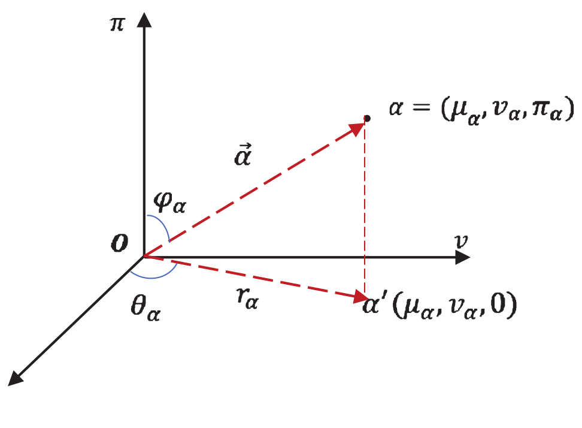

|
Jing Li I'm a fifth-year PhD student at the University of Science and Technology of China, advised by Prof. Falai Chen. Before that, I obtained my bachelor's degree in Mathematics from Southwest Jiaotong University. My current research focuses on 3D generative models, specifically investigating the generation and manipulation of CAD models. |
{kind=link}
Publications |
|
|
Hunyuan3D Studio: End-to-End AI Pipeline for Game-Ready 3D Asset Generation
Jing Li is one of the contributors Technical Report, 2025 project page / paper |

|
Mesh-RFT: Enhancing Mesh Generation via Fine-grained Reinforcement Fine-Tuning
Jian Liu, Jing Xu, Song Guo, Jing Li, Jingfeng Guo, Jiaao Yu, Haohang Weng, Biwen Lei, Xianghui Yang, Zhuo Chen, Fangqi Zhu, Tao Han, Chunchao Guo NeurIPS, 2025 (spotlight) project page / paper / code |
|
|
DTGBrepGen: A Novel B-rep Generative Model through Decoupling Topology and Geometry
Jing Li, Yihang Fu, Falai Chen CVPR, 2025 project page / paper / code |
|
|
iShapEditing: Intelligent Shape Editing with Diffusion Models
Jing Li, Juyong Zhang, Falai Chen Computer Graphics Forum (Proc. Pacific Graphics), 2024 project page / paper / code |
|

|
New similarity and distance measures of Pythagorean fuzzy sets and its application to selection of advertising platforms
Jing Li, Lingling Wen, Guiwu Wei, Jiang Wu, Cun Wei JIFS, 2021 paper |
Research Notes |
| Undergraduate Thesis: Researches on Bézier Surfaces in Polygonal Domains |
| Summary of Implicit Neural Representations |
|
Thanks to Jon Barron for sharing his website's source code. |